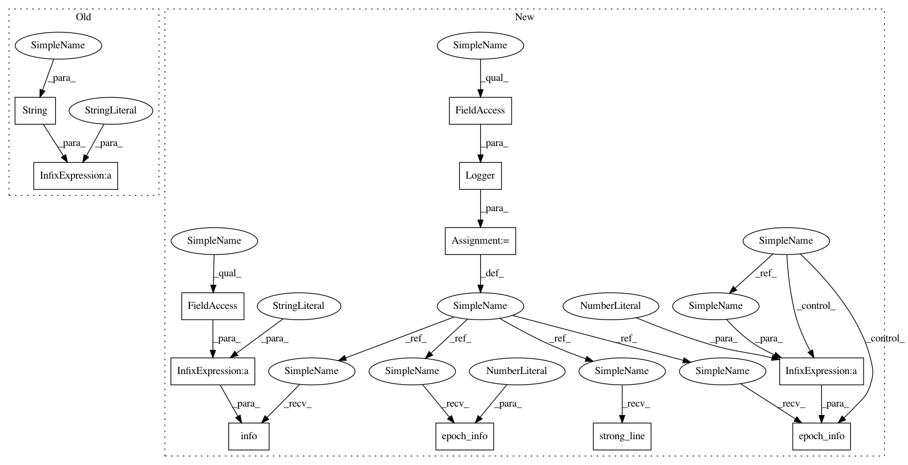

70db49e384a4966d1d3622a1d41d8f4b2d2b53e7,examples/pendulum_a2c.py,,experiment,#Any#Any#Any#Any#Any#Any#Any#Any#Any#Any#,43
Before Change
R = np.mean(compute_J(dataset))
E = agent.policy.entropy()
tqdm.write("END OF EPOCH " + str(it))
tqdm.write("J: {}, R: {}, entropy: {}".format(J, R, E))
tqdm.write("////////////////////////////////////////////////////////////////////////////////////////////////////////////////////////////////////////////////////////////////////////////////////////////////////")
After Change
def experiment(alg, env_id, horizon, gamma, n_epochs, n_steps, n_steps_per_fit,
n_step_test, alg_params, policy_params):
logger = Logger(A2C.__name__, results_dir=None)
logger.strong_line()
logger.info("Experiment Algorithm: " + A2C.__name__)
mdp = Gym(env_id, horizon, gamma)
critic_params = dict(network=Network,
optimizer={"class": optim.RMSprop,
"params": {"lr": 7e-4,
"eps": 1e-5}},
loss=F.mse_loss,
n_features=64,
batch_size=64,
input_shape=mdp.info.observation_space.shape,
output_shape=(1,))
alg_params["critic_params"] = critic_params
policy = GaussianTorchPolicy(Network,
mdp.info.observation_space.shape,
mdp.info.action_space.shape,
**policy_params)
agent = alg(mdp.info, policy, **alg_params)
core = Core(agent, mdp)
dataset = core.evaluate(n_steps=n_step_test, render=False)
J = np.mean(compute_J(dataset, mdp.info.gamma))
R = np.mean(compute_J(dataset))
E = agent.policy.entropy()
logger.epoch_info(0, J=J, R=R, entropy=E)
for it in trange(n_epochs):
core.learn(n_steps=n_steps, n_steps_per_fit=n_steps_per_fit)
dataset = core.evaluate(n_steps=n_step_test, render=False)
J = np.mean(compute_J(dataset, mdp.info.gamma))
R = np.mean(compute_J(dataset))
E = agent.policy.entropy()
logger.epoch_info(it+1, J=J, R=R, entropy=E)
logger.info("Press a button to visualize")
input()
core.evaluate(n_episodes=5, render=True)
In pattern: SUPERPATTERN
Frequency: 3
Non-data size: 12
Instances
Project Name: AIRLab-POLIMI/mushroom
Commit Name: 70db49e384a4966d1d3622a1d41d8f4b2d2b53e7
Time: 2021-02-01
Author: boris.ilpossente@hotmail.it
File Name: examples/pendulum_a2c.py
Class Name:
Method Name: experiment
Project Name: AIRLab-POLIMI/mushroom
Commit Name: 8896f02f94da16afe5b3ea5330e4f99245b75d6b
Time: 2021-01-08
Author: boris.ilpossente@hotmail.it
File Name: examples/lqr_pg.py
Class Name:
Method Name: experiment
Project Name: AIRLab-POLIMI/mushroom
Commit Name: 60ebba7d23a946b55de9aaa34d08637e42e75d3b
Time: 2021-01-08
Author: boris.ilpossente@hotmail.it
File Name: examples/lqr_bbo.py
Class Name:
Method Name: experiment